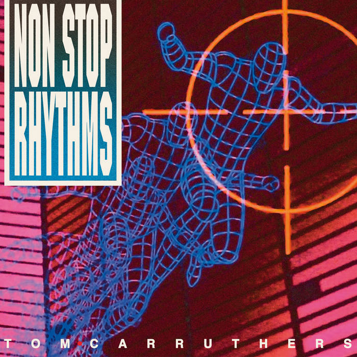

Non-Syncopated rhythm, also known as straight rhythm, emphasize on the strong beats in a measure, typically having a steady and predictable pattern. These "non stop rhythms" rhythm will go along with the pulse of the song, make it easy to follow. This is commonly found in classical music, marches, and traditional pop songs.

Copyright - Henry Balducci 2024.